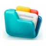
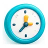
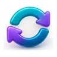
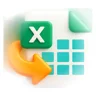

Primeros pasos
RumboAula tiene tres módulos: Partes (convivencia), Guardias y Galvángram (mensajes rápidos). Lo que ves depende de tu perfil.
Profesor/a
Pone partes, registra salidas al baño, ve sus guardias, notifica ausencias y envía avisos.
Tutor/a
Lo mismo que el profesorado y, además, los partes de su grupo y el contacto de sus familias.
Jefatura y Dirección
Convivencia de todo el centro, alertas, informes, cuadrante de guardias y cobertura de clases.
Administración
Alumnado, profesorado, tutorías y cargos. Importa los listados de Raíces.
Entrar en la demostración
- Abre rumboaula.vercel.app en el navegador del móvil o del ordenador.
- Pulsa ▶ Empezar (cargar los datos de ejemplo).
- Elige un perfil: Profesor/a, Tutor/a, Jefatura o Administración. No hace falta nombre ni clave.
- Dentro, muévete con los botones amarillos y blancos de módulo y con las pestañas naranjas.
- Para cambiar de perfil, pulsa Salir y vuelve a elegir.
Para ver cómo le llega un mensaje a otro compañero, usa «Entrar como otro profe del claustro»: arriba aparecen quienes tienen mensajes sin leer.
En el centro, cada docente entrará con su nombre y su clave. La primera vez, crea su propia clave.
Instalarla en el móvil o en el ordenador
No es obligatorio: funciona en el navegador. Instalarla solo sirve para tenerla con su icono, como cualquier otra aplicación.
Android (Chrome)
- Toca el menú ⋮.
- Elige «Instalar aplicación» o «Añadir a pantalla de inicio».
- Confirma.
iPhone o iPad (Safari)
- Toca el botón Compartir (cuadrado con flecha).
- Elige «Añadir a pantalla de inicio».
- Toca «Añadir».
Ordenador (Chrome o Edge)
- Pulsa el icono de instalar a la derecha de la barra de direcciones.
- O en el menú: «Instalar página como aplicación».
- Se abre en su propia ventana.
En la app, ❓ Preguntas → «¿Cómo instalo RumboAula…?» muestra estos pasos para tu dispositivo y, si el navegador lo permite, un botón «Instalar ahora».
Ayuda en cada pantalla
Cada pantalla empieza con un recuadro «Cómo se usa» con sus pasos. Pulsa Entendido para recogerlo y «Cómo se usa» para volver a verlo.
Partes y convivencia
Módulo Partes. Las faltas siguen la tipificación del Decreto 32/2019 de convivencia de la Comunidad de Madrid.
Poner un parte
- En Nuevo Parte, escribe el nombre o el curso del alumno y elígelo de la lista.
- Elige la hora, el tipo y la gravedad: leve, grave o muy grave.
- Elige la falta tipificada de la lista oficial.
- Describe lo ocurrido con hechos concretos. Las frases rápidas te ayudan a empezar.
- Pulsa Generar Parte.
Verás el curso, el tutor/a y los partes que le has puesto tú. El contacto de la familia y el total de partes solo los ve su tutor/a.
Avisar a la familia y a jefatura
Al generar el parte aparece «Cómo avisar a la familia y a jefatura»:
- Ver y Descargar PDF: el parte listo para firmar.
- Copiar texto: el correo ya redactado.
- Copiar correos: las direcciones de la familia, del tutor/a y de jefatura.
El correo se envía desde tu cuenta de EducaMadrid: pega el texto y adjunta el PDF.
Parte de grupo
- En Parte de Grupo, elige el grupo.
- Quita a los alumnos que no estuvieron implicados.
- Elige gravedad y falta, y escribe una sola descripción.
- Pulsa Generar Parte para N alumnos: se crea un parte para cada uno.
Salidas al baño
- En Baños, busca al alumno y pulsa Registrar Salida.
- Cuando vuelva, pulsa ✅ Regresó en «Fuera ahora».
Si un alumno sale demasiadas veces, jefatura recibe un aviso automático.

Mis partes y estadísticas- Mis Partes: los partes que has puesto, con Ver y PDF.
- Estadísticas: tus partes por día, semana, quincena o mes, y los avisos de alumnado con 3 o más partes en el trimestre.
- En cada aviso: Avisar a la familia (informe en PDF y correo redactado) y, después, ✅ Ya he avisado.
Guardias
Módulo Guardias. Cada zona tiene un titular, un apoyo (pareja) y un sustituto, que entra si falta uno de los dos o si sale a cubrir una clase.

Ahora: la hora en curso de un vistazo- Reloj, minutos que quedan de la hora y cuál viene después. Se actualiza solo.
- Te toca guardia: tu zona, tu papel y por quién entras, con la tarea que ha dejado el ausente.
- Cada zona con su equipo y su estado: completa, entra el sustituto, solo 1 profesor o descubierta.
- Las clases sin su profesor/a y quién las cubre.
- Con los botones de horas puedes mirar cualquier otra hora del día.
Si jefatura te asigna cubrir una clase, verás en azul «Jefatura te ha asignado: cubres la clase de…», con el aula y la tarea.
Mi guardia hoy: firmar y pasar lista
- En Mi Guardia Hoy ves cada guardia del día con tu papel y tu equipo.
- Cuando empiece, pulsa Firmar guardia.
- Si cubres una clase, pulsa Pasar lista y marca solo a quien falta.
El calendario de arriba muestra tus guardias de los próximos días.

Notificar una ausencia- En Notificar Ausencia, elige la fecha y marca las horas.
- Indica el edificio, el aula y la asignatura.
- Deja la tarea y dónde está el material.
- Pulsa Notificar Ausencia a Jefatura.
Completa, no sustituye, el correo de EducaMadrid y la llamada al instituto.
Galvángram
Mensajes rápidos entre profesorado y jefatura. El orden es: qué pasa → dónde estás → a quién avisar.
Enviar un aviso
- Toca un mensaje rápido (Alumno enfermo, Emergencia, Falta material…) o escribe el tuyo.
- En 📍 ¿Dónde estás?, deja que se rellene según tu horario o escribe a mano el aula, el edificio y el grupo. En los avisos urgentes es obligatorio.
- En ¿A quién avisar? aparecen los profes de guardia de esa hora por zonas, primero los de tu edificio (⭐). Toca un nombre o 📣 Avisar a la zona.
- Pulsa Enviar Mensaje.
Cada uno ve solo los mensajes que envía y recibe.
Recibir un aviso urgente
- Sale a pantalla completa en cualquier pantalla, con sonido y vibración si el dispositivo lo permite.
- Muestra el lugar, el mensaje, a quién más se ha avisado y quién va ya.
- Responde con 🏃 Voy o ✋ No puedo.
Quien lo envió ve tu respuesta al momento, y en su historial el estado: enviado, ✓✓ leído o la respuesta.
En una emergencia, sigue el protocolo del centro: llama a conserjería o a jefatura y avisa en persona si hace falta. Galvángram ayuda a avisar más rápido, pero no lo sustituye.
Tutoría
El tutor/a usa el perfil de profesorado y, además, ve lo de su grupo.
- En Estadísticas, elige «Como tutor/a» para ver todos los partes de tu grupo, o «Como profesor/a: mis partes» para ver solo los tuyos.
- Recibes los avisos de alumnado de tu grupo con 3 o más partes en el trimestre.
- En «Partes de un alumno/a», usa Contactar con la familia: informe en PDF, correo redactado y sus direcciones.
- Al poner un parte a alguien de tu grupo, ves el contacto de la familia y todos sus partes.
Jefatura de Estudios
Dos módulos: Partes & Alumnos y Guardias & Ausencias.
Panel y partes del centro
- Dashboard: partes por gravedad, alumnado fuera del aula, profesorado ausente y alertas.
- Por Curso y Por Alumno: el historial completo, con gravedad y tipificación.
- Partes: todos los partes, con filtros por curso, alumno, gravedad y fechas.
- Baños: quién está fuera ahora y el historial.
Alertas, informes y estadísticas
- Alertas: avisos automáticos por acumulación de leves, 3 partes de un alumno, partes fuera del horario del centro y salidas al baño repetidas. Pulsa una para marcarla como leída.
- Informe: elige partes o salidas al baño, filtra y pulsa el botón del informe. Se abre la vista previa con Descargar PDF. Con Limpiar filtros vuelves a todos.
- Estadísticas: cifras y gráficas por periodo, informes en PDF y descarga en Excel.
Cubrir clases sin profesor
En Ahora y en Coordinación Diaria, cada clase sin profesor muestra quién puede cubrirla, por este orden:
- Quien está de guardia en aula.
- El sustituto que está de reserva.
- Alguien de una zona con dos profes del mismo edificio.
- Alguien de una zona con dos profes de otro edificio.
Dentro de cada grupo, primero quien lleva menos clases cubiertas y guardias ese día. Pulsa Asignar y el profe lo verá en su pantalla. Nunca deja una zona vacía.
Cuadrante de guardias
- En Cuadrante, elige el profesor y el inicio de la quincena.
- En cada día y hora, elige la zona de la que es titular.
- Asigna el apoyo y el sustituto. Lo que falta sale en rojo.
Nadie puede tener más de 4 guardias al día; entre paréntesis, las que ya tiene cada uno. Copiar de la quincena anterior evita empezar de cero.
Ausencias, firmas y listas
- Ausencias de Profesores: las que notifica el profesorado. Si alguien llama, pulsa Registrar una ausencia comunicada por teléfono.
- Parte del Día: el estado de todas las zonas de hoy.
- Firmas y listas: quién ha firmado cada guardia y a qué hora, y las listas pasadas. Descargar PDF para archivarlo.
Administración
Para Secretaría, Dirección y Coordinación TIC.

Alumnado y tutorías- Exporta el listado de Raíces a CSV o Excel.
- En Alumnos → Importar CSV/Excel, arrástralo, revisa la vista previa y confirma. Si importas el mismo archivo dos veces, no se duplica nadie.
- Con Añadir manual das de alta a un alumno suelto; avisa si ya existe.
- En Tutorías de grupo, elige el tutor/a de cada grupo y su correo del centro.
Profesorado y cargos
- Añade a cada profesor con su nombre completo y su correo.
- Marca sus cargos: deciden a qué perfiles entra. Jefatura y Orientación abren «Jefatura y Dirección»; Secretaría y Coordinación TIC abren Administración.
- Si alguien olvida su clave, pulsa Restablecer clave: la creará de nuevo al entrar.
- Indica los correos del centro (Jefatura, Orientación, Dirección) que aparecen al avisar a las familias.
Ayuda y protección de datos
Preguntas frecuentes
Pulsa ❓ Preguntas, arriba junto a «Salir», o el enlace de la pantalla de entrada. Responde a dudas como dónde se guardan los datos, por qué no llega un mensaje o qué hacer en una emergencia.
Si algo falla
Pulsa ⚠️ Informar de un problema, abajo a la izquierda, y cuenta qué ha pasado. Si una pantalla se rompe, la propia app te ofrecerá avisar. El informe incluye la pantalla, tu perfil, la hora y el error técnico, nunca datos del alumnado.
Quién ve qué
| Dato | Profesor/a | Tutor/a del grupo | Jefatura |
|---|---|---|---|
| Partes que ha puesto | Sí | Sí | Sí |
| Todos los partes de un alumno | No | Sí, de su grupo | Sí |
| Contacto de la familia | Al poner un parte | Sí, de su grupo | Sí |
| Mensajes de Galvángram | Solo los suyos | Solo los suyos | Solo los suyos |
| Guardias y cobertura de clases | Sí | Sí | Sí, y asigna |
RumboAula está diseñada para cumplir el RGPD, la Ley Orgánica 3/2018 de Protección de Datos y la normativa de protección de menores. Antes de usarla con datos reales, se someterá a la aprobación del equipo directivo y de la Delegación de Protección de Datos de la Consejería de Educación. Cuando funcione en el centro, los datos estarán solo en un servidor del centro o de EducaMadrid.
En esta versión de demostración, cada dispositivo guarda sus propios datos: lo que hagas en el móvil no aparece en el ordenador, y un mensaje no sale del dispositivo donde se escribe.